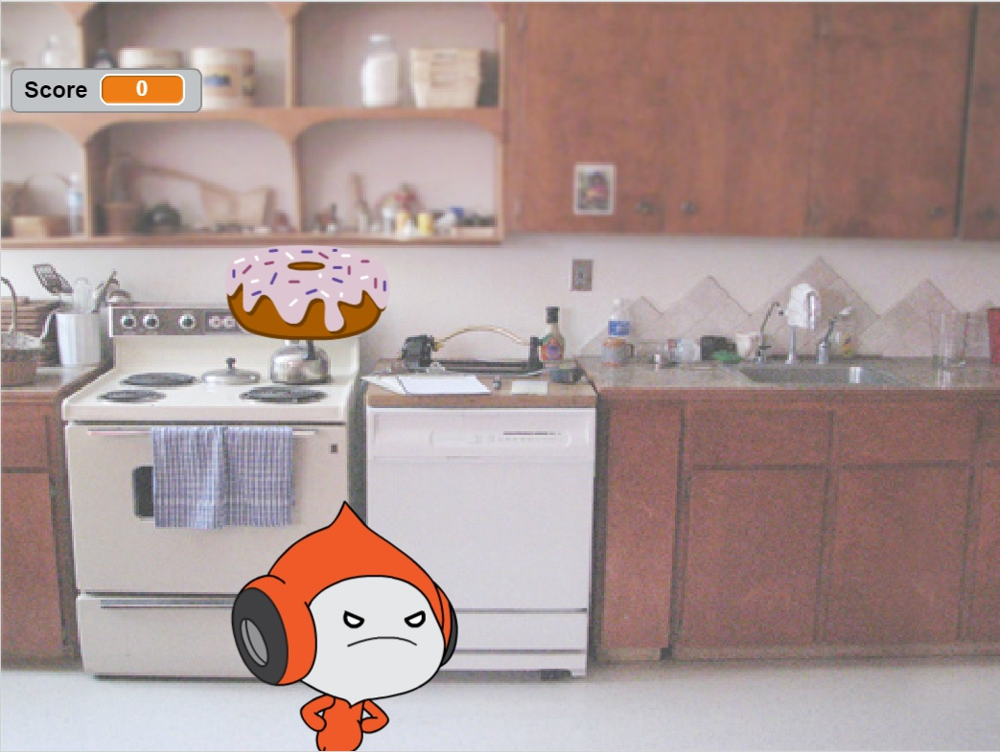

Name Assignment

Description:
Use scratch to design and create a program that shows your name. The requirements were to have three unique behaviors within the program. All of the letters in your name must have a program. The requirements also includes the project to start when the green flag is clicked and the extra credit portion is to add a function to reset the scene to the beginning each time the green flag is clicked.
Concepts Learned:
- Using event blocks - green flag clicked, when key pressed
- Conditional statements - used if statements
- Used loops - I used a forever block and I used a repeat until block
- Sprites - I created my own sprites using the sprite editor and I used the library of sprites to find letters in my name and adjusted the costumes
- Movement - I used the x and y values to make my sprites move to their original location when the green flag was clicked and I rotated the sprites
Computer Buying Project

Description:
Interview a person that is interested in buying a computer and use their information that they tell you to help them chose the correct computer to buy. Your job is to give them at least four options and help them decide. You can chose to display the information you gathered by using either a PowerPoint, debate, skit, video, or a different approved product. Your final project should have questions and responses from the interview, computer comparison chart, which computer is chosen, justification for choosing that computer, and you should be prepared to answer questions from other students.
Concepts Learned:
- Different parts of the computer
- Software options that computers have
- What different brands offer for different price ranges
- How to use broadcast options in Scratch
Final Project

Description:
Create your own game and be creative! Be sure to include a timer, have a help screen, keep score, reset the game when the green flag is clicked, and let the player know if the win! The presentation portion will be 10 points and you must include a brief description of the game and explain how it was programmed using Scratch. Peer grading will take up 20 points, and the total score is out of 100.
Concepts Learned
- Timers in scratch
- How to make the different sprites interact with the user fluidly
- The use of making different blocks was useful
- How to use broadcast options in Scratch